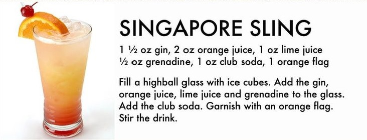

Singapore Sling

Ingredients:
- 1 highball glass
- Ice cubes
- 1 1/2 Oz Gin
- 2 Oz Orange Soda
- 1 Oz Lime Juice
- 1/2 Oz Grenadine
- 1 Oz Club Soda
- 1 Orange Flag
Directions:
- Fill a highball glass with ice cubes.
- Add the gin, orange soda, lime juice, and grenadine to the glass.
- Add the club soda.
- Garnish with an orange flag.
- Stir, then enjoy!